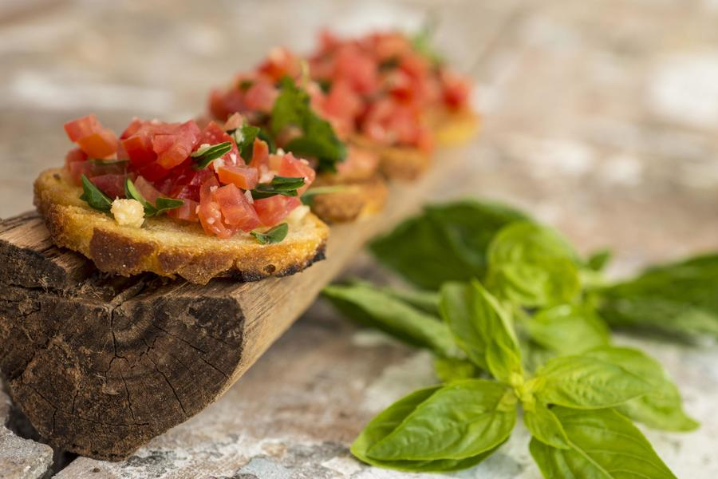
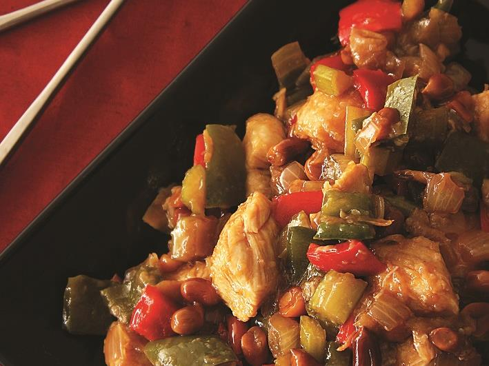
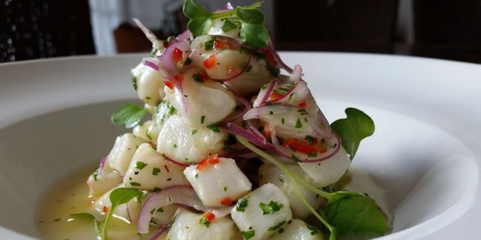
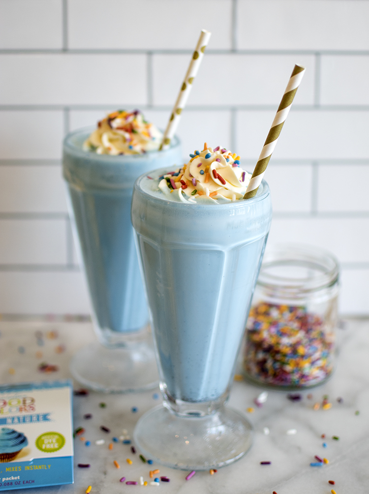

Bruschetta
Ingredientes
- 400 g de pão italiano (filão), em fatias de 1 cm de espessura
- 7 colheres (sopa) (100 ml) de azeite de oliva
- 3 tomates Débora (450 g), vermelhos e firmes, sem sementes, picados
- 1 xícara (50 g) de manjericão, picado
- 1 colher (chá) (3 g) de alho picado
- 3 xícaras (100 g) de queijo parmesão ralado grosso sal e pimenta-do-reino branca moída na hora a gosto
Modo de preparo
1) Regue as fatias de pão com metade do azeite, arrume-as numa assadeira e reserve.
2) Num recipiente, tempere o tomate e o manjericão com sal, pimenta, o alho e o azeite restante.
3) Coloque uma porção generosa sobre cada fatia de pão e salpique com o queijo parmesão.
4) Leve ao forno preaquecido a 220°C por 10 minutos, ou até dourar.
5) Sirva quente.
Fango xadrez
Ingredientes
- 400 g de peito de frango cortado em cubos
- 1 cebola cortada em pedaços de 2 cm
- 1 pimentão verde e 1 vermelho em quadrados de 2 cm
- 2 talos de salsão (aipo) em quadrados
- ½ xícara (chá) de amendoim sem pele torrado ou castanha de caju
- 2 colheres (sopa) de óleo
- 2 colheres (sopa) de molho de soja
- 1 xícara (chá) de caldo de galinha
- 1 colher (sopa) de amido de milho
- 2 colheres (sopa) de ketchup ou oyster sauce (veja observação) Sal e pimenta-do-reino
Modo de preparo
Tempere os cubos de frango com sal e pimenta. Reserve. Aqueça o óleo e frite o amendoim ou castanha de caju. Retire com uma escumadeira, escorra bem e reserve. No mesmo óleo, frite o frango, mas sem deixar dourar. Retire e reserve. Ainda no mesmo óleo, frite rapidamente a cebola, os pimentões e o salsão, sem deixar que murchem. Escorra. Descarte o óleo restante e junte os ingredientes fritos na panela, exceto o amendoim ou castanha. À parte, dissolva o amido de milho no caldo de galinha e acrescente o molho de soja e o oyster sauce ou ketchup. Misture bem e adicione à panela. Cozinhe por 2 minutos para engrossar. Ajuste o sal e transfira para uma travessa. Salpique o amendoim e sirva com arroz branco. Observação: Oyster sauce é um molho típico chinês, preparado com caramelo e ostras. É ele que dá o sabor característico dessa culinária.
Ceviche
Ingredientes
- 600g de robalo
- 500 ml de suco de limão
- Pimenta dedo de moça a gosto
- 1 cebola roxa
- Coentro a gosto
- Sal
- 1 colher de chá de gengibre
- Pimenta do reino
- Azeite
Modo de preparo
Corte a cebola em juliene, ou seja, tiras bem finas. Retire as sementes da pimenta dedo de moça e corte em cubos bem pequenos, assim como o gengibre, e o coentro. Junte todos os ingredientes ao peixe já cortado. Junte todos os ingredientes, e deixe o limão por último. Adicione o suco de limão a mistura, o azeite a gosto, e tempere com sal e pimenta. Sirva imediatamente bem gelado. Quando adicionar o limão, tempere com sal e pimenta do reino a gosto. A essa mesma receita, pode-se adicionar outros frutos do mar como polvo, camarões e mariscos.
Milk Shake de Corote
Ingredientes
- 8 bolas de sorvete de flocos
- 3 doses de corote de blueberry
- 1 dose de vodka de sua preferência
- 1 xícara de leite condensado
- 250 ml de leite
- Mirtilo (a gosto)
- Chantilly (a gosto)
- Calda de chocolate (agosto)
Modo de preparo
Pegue o sorvete, o corote, a vodka, o leite condensado, o leite e o mirtilo (a gosto) bata tudo no liquidificador. Coloque em uma taça de sua preferência, decore a taça com a calda de chocolate despeje o milk shake na taça e finalize com o chantilly. Dica: Você também pode decorar com mirtilos.